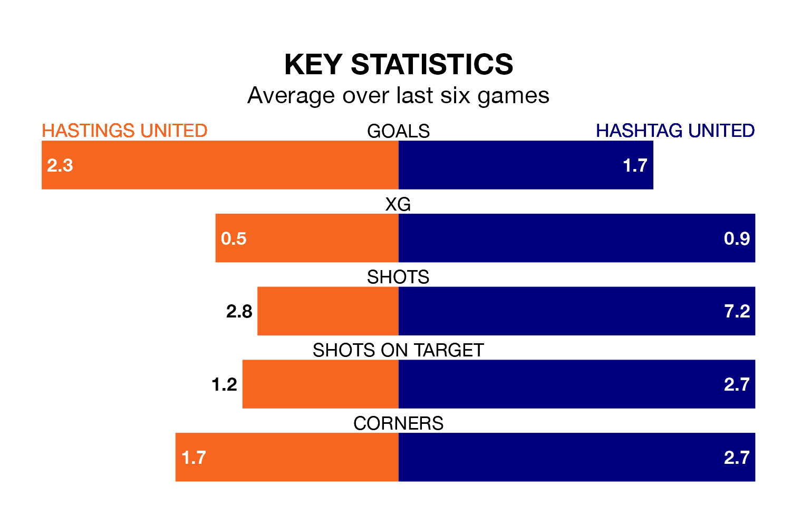

Hashtag United come to the Pilot Field to play Hastings United on Saturday in terrible form, having collected just one point from their last six games.
The visitors have drawn just one of their last six fixtures, while Hastings have two wins and three draws.
With 44 goals in 25 games so far this season, Hastings are scoring more than average in the league with 1.8 goals per game. And they are conceding fewer than average, letting in 36 goals at a rate of 1.4 per game.
Hashtag are also above average scorers, with 1.7 goals per game, compared to a league average of 1.6. They have also conceded 1.7 goals per game.
Hastings United are seventh in the table after 25 games, of which they have won 11 and drawn six, earning 39 points.
Hashtag United are three places behind the hosts in 10th, with nine wins and nine draws putting them on 36 points.
Hastings's last match was on January 20, a 2-1 loss against Carshalton Athletic.
Hashtag drew 3-3 with Enfield Town last time out, also on January 20.
Updated: 09:07 (UTC), 24/01/24